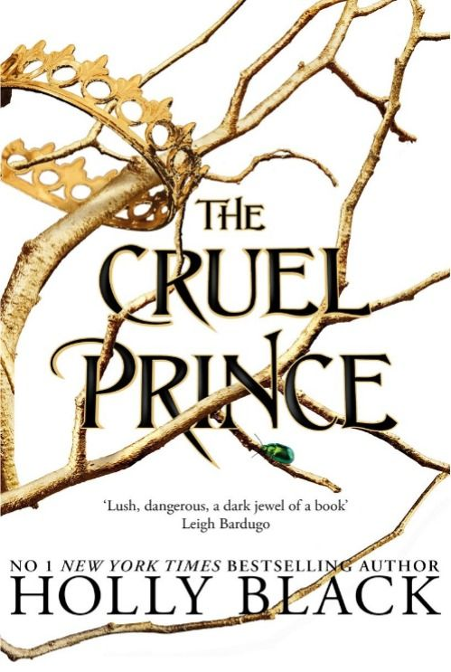

სასტიკი პრინცი

„სასტიკი პრინცი“ სერია – ჰოლი ბლექი
ჰოლი ბლექის "დამპალი პრინცი" (The Cruel Prince) სერია, რომელიც ასევე ცნობილია როგორც The Folk of the Air ტრილოგია, გახლავთ მაგიური და დაძაბული ისტორია ძალაუფლების, ინტრიგების და თვითდამკვიდრების შესახებ.
მთავარი გმირი, ჯუდი, ჩვეულებრივი ადამიანია, რომელიც ბავშვობაში და თავის ორ დასთან ერთად ფეების სამყაროში – ელფჰეიმში აღმოჩნდება. იქ, სადაც სილამაზე შხამიანია და პატივი იშვიათი სარგებელია, ჯუდი ცდილობს მტკიცედ დადგეს ფეხზე, მოიპოვოს ძალაუფლება და დაიმკვიდროს ადგილი იმ სამყაროში, რომელიც მას პატივისცემას არ სთავაზობს.
მისი ყველაზე დიდი გამოწვევა პრინცი კარდანია, ლამაზი, ცივი და სასტიკი ფეა, რომელიც ჯუდის ცხოვრებას ჯოჯოხეთად აქცევს. თუმცა, როგორც პოლიტიკური თამაშები ღრმავდება, ისე იცვლება ჯუდისა და კარდანის ურთიერთობაც – ბნელ, მიმზიდველ და დამაბნეველ გზაზე.
სერია შედგება შემდეგი წიგნებისგან:
The Cruel Prince (სასტიკი პრინცი)
The Wicked King (საზიზღარი მეფე)
The Queen of Nothing (არარაობის დედოფალი)
ეს არის ზღაპრული სამყარო, სადაც ტკბილეულიც კი შეიძლება მოჩვენებითი იყოს და ყველაზე დიდი იარაღი – გონება, სტრატეგია და სურვილია.